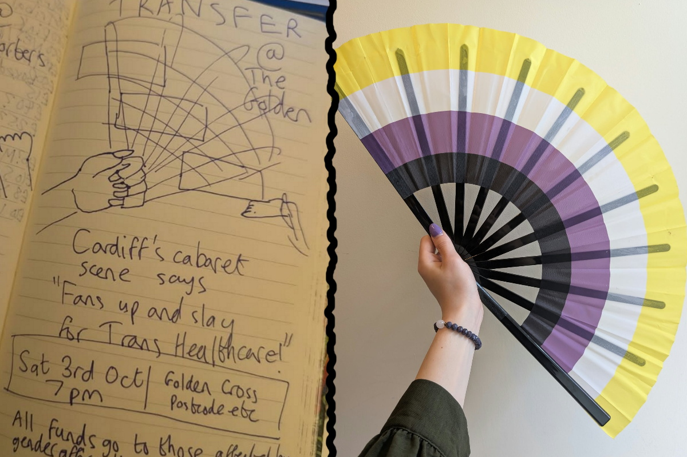
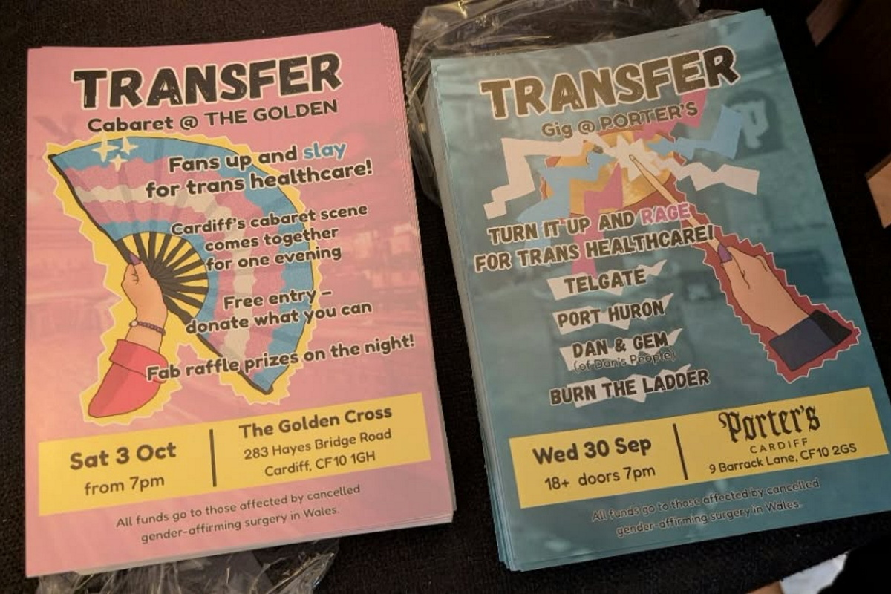
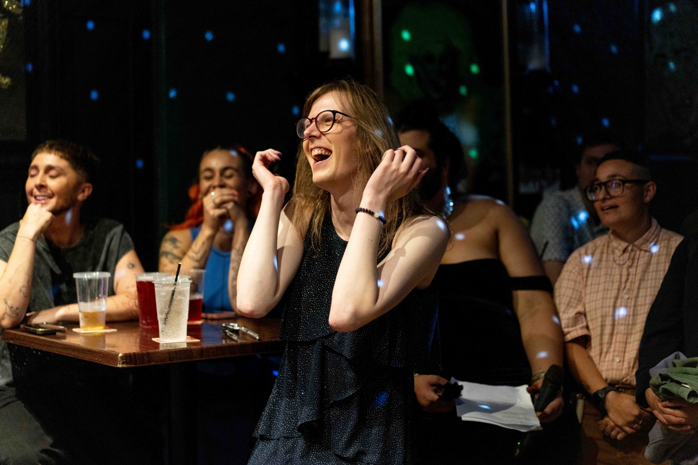
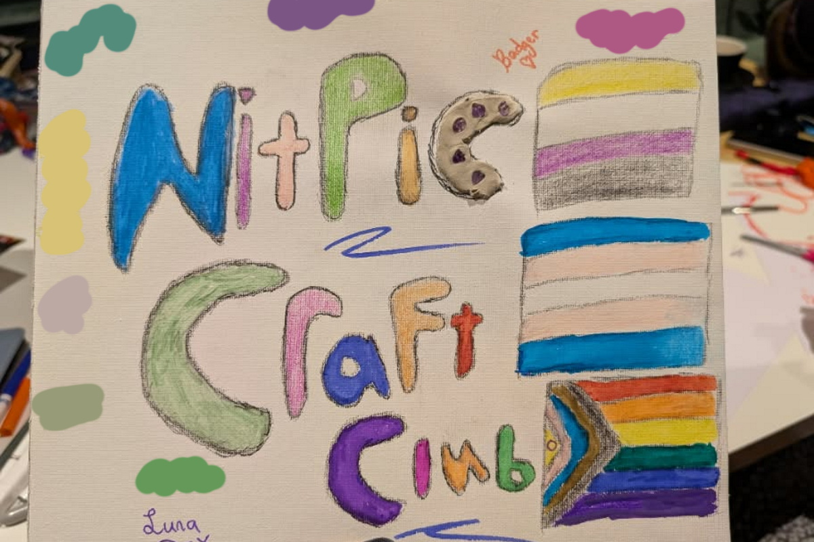
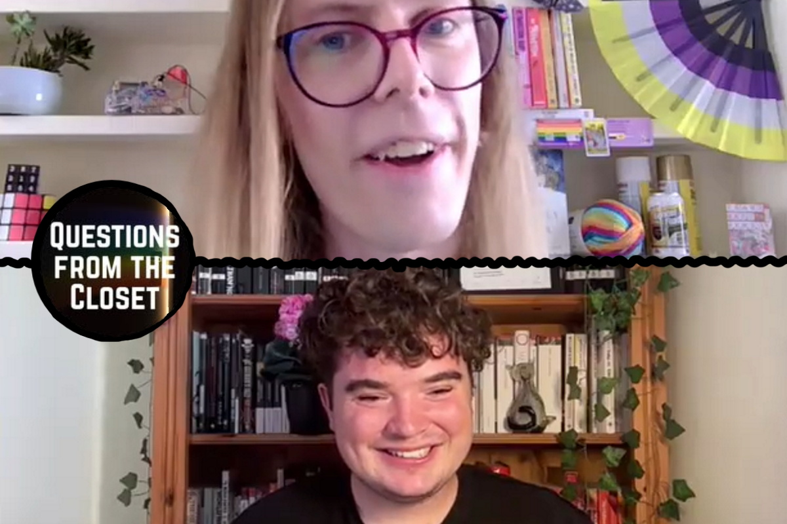
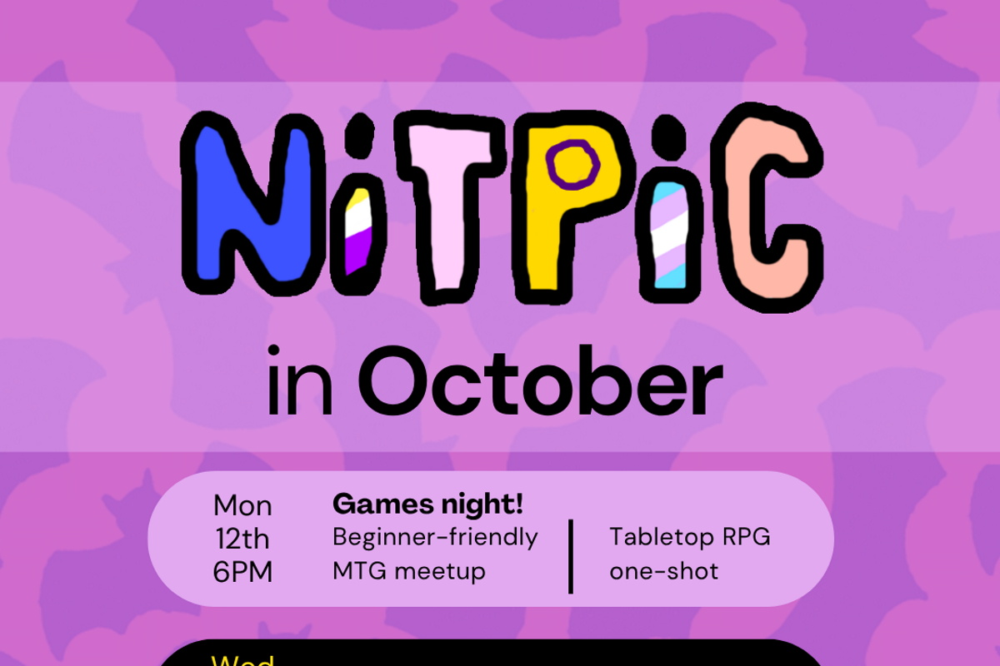
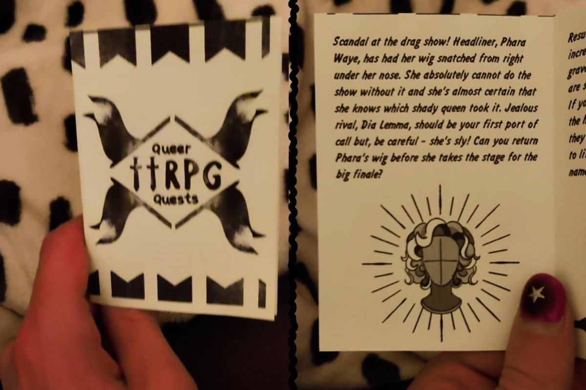
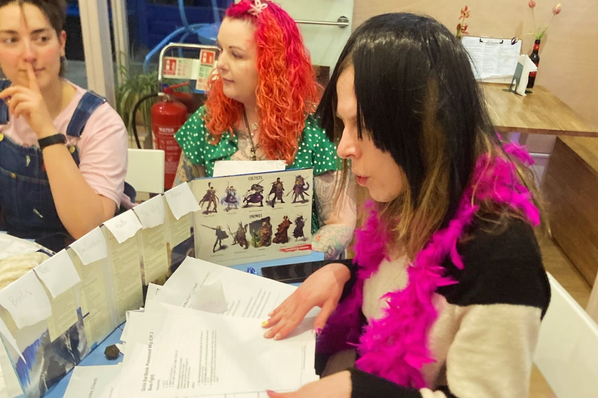
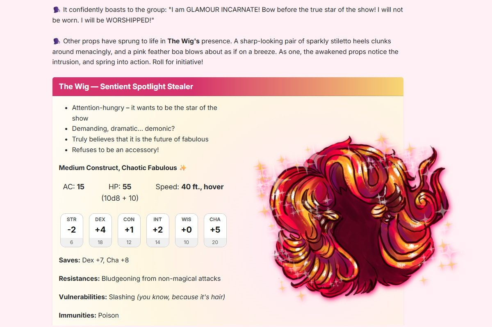

Hi! I'm Luna (they/she).
I develop creative ideas, bring people together, and handle the practical work required to make things happen! I carry projects through into the real world, and look for ways that good ideas can keep going, reach more people, or become something bigger!
I'm a director of Cardiff-based LGBTQIA+ organisation Lone Worlds. And I'm the founder and lead organiser of NITPIC, a community group for Non-binary, Intersex, and Trans People In Cardiff!
I'm available for freelance work in creative project development, event production, and community organising. I'm also interested in speaking and facilitating workshops on creating truly welcoming trans-inclusive events, and transforming cool ideas into real-world projects.
Do you have an idea you'd like to make happen? Whether it's by developing a concept and designing promotional material, or bringing collaborators together and producing an event, I'd love to help turn it into something real.
Let's create something exciting together!
You can reach me at:
luna@moonandback.studio |
@VeradisLuna |
07832 938983
TRANSFER
TRANSFER Gig and TRANSFER Cabaret were two connected events, raising funds for people affected by cancelled gender-affirming surgeries in Wales.
I developed their visual identity, and led production of the cabaret show!



NITPIC
A community group for Non-binary, Intersex, and Trans People in Cardiff.
I founded the group and I help to develop its growing programme of low-pressure social meetups.
I find venues, arrange ticketing, and steer the organisation as it expands,
increasingly shaped and sustained by its members.



Snatched!
A drag-themed roleplaying adventure that I developed and ran live.
I later adapted it into a browser-based publication with an artistic collaborator,
to share with more players and raise funds for Good Law Project.


